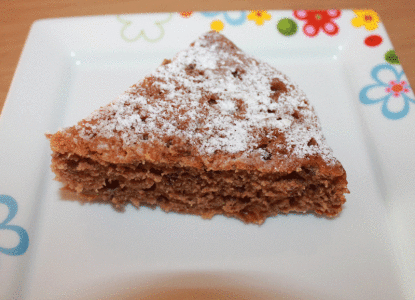

Raccolta ricette ricette per la colazione | Ricette della Nonna
2021.06.24 14:56

Antipasti Primi piatti Secondi piatti Dolci Torte semplici e veloci Ingredienti Ricette asparagi Ricette melanzane Ricette zucchine Ricette fragole Ricette peperoni Ricette patate Ricette carciofi Ricette zucca Speciali Ricette cheesecake Ricette Nutella Ricette biscotti Ricette muffin Ricette torte di compleanno Salse Alimenti e ingredienti Ricette polpette Ricette per la cena Ricette marmellate Ricette torte salate Ricette estive veloci Ricette per Halloween Guide di cucina Ricette feste Ricette Natale Ricette Capodanno Ricette Carnevale Ricette Pasqua Biscotti Natale Antipasti Natale
ricette per la colazione
Ciambella al cacao La ciambella al cacao è la torta giusta da preparare come dolce da colazione. E’ perfetta per essere inzuppata nel latte. Nonna ha utilizzato.. Plumcake della colazione alle banane Avete delle banane un pò troppo mature e non sapete cosa farne? La risposta la trovate nella ricetta di questo profumato e gustoso plumcake della.. Ciambellone alla Nutella soffice Il ciambellone alla Nutella è un soffice dolce da preparare per la colazione o la merenda che rappresenta una variante molto gustosa del classico.. Torta zebrata La torta zebrata è una variante scenografica del classico ciambellone marmorizzato. Una torta in cui si alternano strati di impasto chiaro alternati.. Torta al latte caldo La torta al latte caldo è una di quelle torte che definire soffici e buone non rende esattamente l’idea di quanto effettivamente sia. E’.. Ciambellone soffice soffice Il ciambellone è uno dei dolci più semplici e classici da preparare. Per colazione o per merenda preparare un soffice ciambellone è sempre.. Pain au chocolat Il pain au chocolat è un dolce di origine francese che consiste in un saccottino di pasta sfoglia con al centro due barrette di cioccolata fondente:.. Ciambella al caffè La ciambella al caffè è una torta che risulta ideale per la colazione se accompagnata da una tazza di latte o di te dove intingerla. E’ un.. Muffin al cocco I muffin sono soffici dolcetti in pratiche monoporzioni che possono essere preparati con tantissimi ingredienti per una colazione sempre nuova. In.. Pain perdu di pandoro Il pain perdu è una ricetta di origine francese nata per riciclare il pane secco avanzato, ma in questa versione viene proposto per riciclare il.. Cotton cake La Cotton Cake è una torta il cui sapore è fra una cheesecake e un budino. Molto soffice e delicata, è adatta a qualsiasi occasione: un.. Pancakes con le fragole Durante il fine settimana ci si può concedere un po’ più di tempo per la colazione e preparate qualcosa di sfizioso come questi soffici.. Muffin alle mele I muffin alle mele sono dei sofficissimi dolcetti semplici e veloci da preparare e ideale per la merenda o la colazione. L’ideale.. Girelle di sfoglia, crema pasticcera e uvetta Queste girelle di sfoglia, crema pasticcera e uvetta sono davvero semplici da fare! Ottime a colazione o per la merenda, si preparano in poco tempo e.. Muffin bicolore I muffin bicolore con una base bianca dai toni vanigliati e una cupoletta al caffè forte, sono facilissimi da preparare e hanno solo bisogno di.. Pagina 1 di 3 1 2 3 » Ricette cheesecake Ricette torte facili e veloci Ricette melanzane facili e veloci Ricette zucchine facili e veloci Ricette peperoni facili e veloci Ricette biscotti facili e veloci Ricette Nutella facili e veloci Ricette polpette facili e veloci Ricette patate facili e veloci